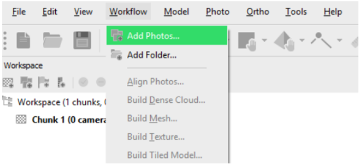
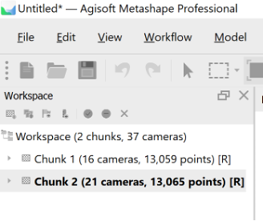
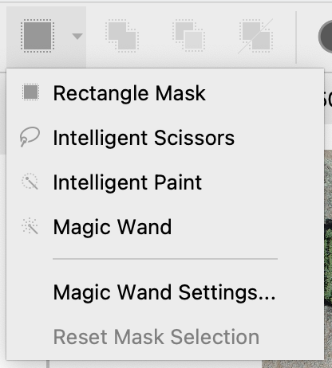
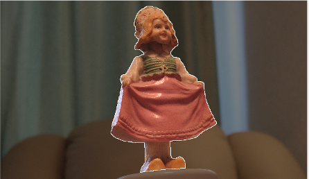
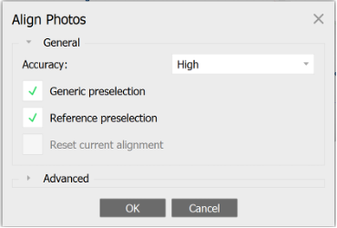
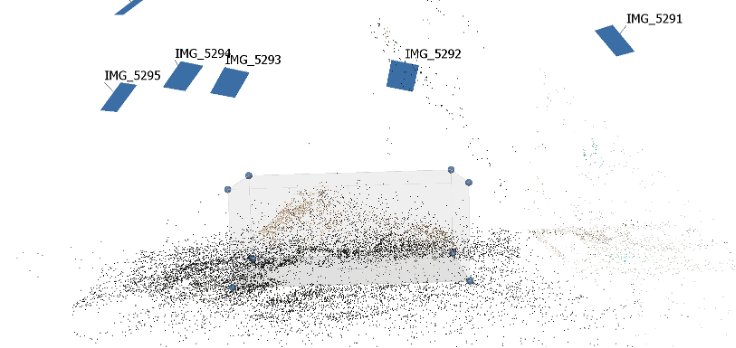
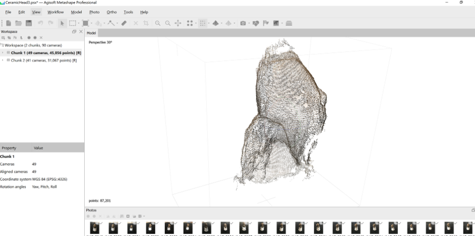
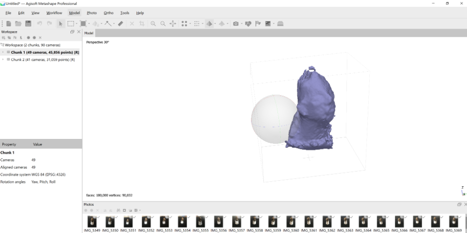
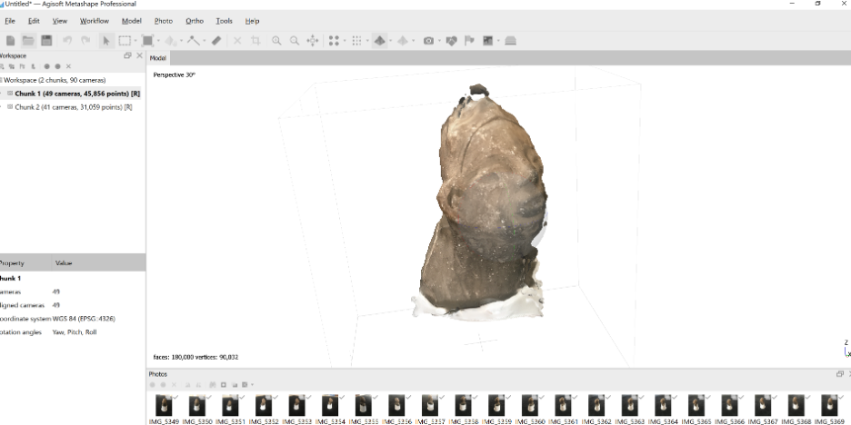

Generating a 3D Model
Set-up
Load your photos onto your computer and open Metashape. You will be working in a new project, a file that will save all the processing steps you undertake. You should save the project with a sensible name on your computer.
Add Photos
Before adding Photos, carefully review them in a photo editor or viewer. Do not use any photos that are blurry, have bad lighting, or have too much background junk.
To add photos select the Add Photos... command from Workflow menu or click Add Photos button on Workspace toolbar. In the Add Photos dialog, browse the source folder and select files to be processed.
Select only the photos from one side of an object for now and click the Open button.

In the lower lefthand corner of the software window, be sure you have selected the Workspace tab.
Put all the photos of each side of an object into a separate “Chunk”.
Each chunk will need to be aligned and have a dense cloud generated independently.

Mask Photos
You may not need this step if your photos do not contain much background.
If your photos have a lot of extraneous background, you may need to “mask” this out. Open a photo in Photo View by double-clicking on the photo in the Photos pane.
Locate Mask tools in the Toolbar and use one of the tools.

Rectangular Selection (![icon16_select_rect.png]() ) for rectangular shape irrelevant elements; Intelligent Scissors (
) for rectangular shape irrelevant elements; Intelligent Scissors (![icon16_lasso.png]() ) selects irregular shaped area in the photo; Intelligent Paint (
) selects irregular shaped area in the photo; Intelligent Paint (![icon16_intelligent_paint.png]() ) paints the selection with the mouse. Magic Wand (
) paints the selection with the mouse. Magic Wand (![icon16_magic_wand.png]() ) tool masks uniform background of the image. To use it, click the Magic Wand tool, then click inside the uniform area to be masked.
) tool masks uniform background of the image. To use it, click the Magic Wand tool, then click inside the uniform area to be masked.

Save the mask by clicking Add Selection ( ) button from the Toolbar.
) button from the Toolbar.
Repeat the described procedure for every photo where background needs to be masked.
For some additional help on easier masking operations, check out this video: https://www.youtube.com/watch?v=feOo3KI-J-U
Read more about masking photos from Agisoft’s own tutorial: https://agisoft.freshdesk.com/support/solutions/articles/31000153479-masks
Align Photos
At this stage Metashape estimates the camera position for each photo and builds the sparse point cloud model.
Select Align Photos command from the Workflowmenu.

Set the following recommended values for the parameters in the Align Photos dialogue:
Accuracy: High or Medium (lower accuracy settings can be used to get the rough camera positions in the shorter time)Key point limit: 40000Tie point limit:1000
Click OK button to start photo alignment.
Create a new chuck for each set of photos that are taken from a different perspective and follow the same steps as above.
Set Bounding Box
After photo alignment is finished you should see a sparse point cloud showing your object with a box around it.
Resize the bounding box position and orientation to fit the object, as it defines the limits of the area to be modeled.

Build Dense Cloud
Based on the estimated camera positions, Metashape now creates a single dense point cloud.
Select Build Dense Cloud command from the Workflow menu.
You will need to do this procedure for each chunk in your model.
Set the following recommended values for the parameters in the Build Dense Clouddialogue:
Quality: Medium (higher quality takes quite a long time and demands more computational resources)Depth filtering: Aggressive (if the geometry of the scene to be reconstructed is complex with numerous small details on the foreground, then it is recommended to set to Mild depth filtering mode, for important features not to be sorted out)
Click OK button to start building dense point cloud.

You should carefully inspect the resulting point cloud, and use the Rectangle, Circle or other selection tools to manually select bad points and delete them from the model.
Build a Mesh
After the dense point cloud has been reconstructed it is possible to generate a high-quality polygonal mesh model based on the dense cloud data, basically filling in areas between points in the point cloud to create a continuous surface.
Select Build Mesh command from the Workflow menu.
Set the following recommended values for the parameters in the Build Mesh dialog:
Source data: Dense cloudSurface type: Arbitrary (3D)Face count: High (to get a nice model) or Medium (for faster processing)
Click OK button to start mesh reconstruction.

When complete notice that you can view the model now either as point cloud or a mesh.
If your mesh looks terrible you should back up and clean your point cloud up a bit more.
Build Texture
Now we will use the color values from the photos to create a textured surface on the blank 3D model.
Select Build Texture command from the Workflow menu.
Set the following recommended values for the parameters in the Build Texture dialogue:
Mapping mode: GenericBlending mode: MosaicTexture size/count: 4096 x 1 (width and height of the texture atlas in pixels and determines the number of files for texture to be exported to. Exporting texture to several files allows to archive greater resolution of the final model texture, while export of high resolution texture to a single file can fail due to RAM limitations)Enable color correction: disabled
Click OK button to start texture generation. When this is done you will have a complete 3D model.

Align and Merge Chunks
Select Align Chucks from the workflow toolbar.
In the dialogue window, select options Method: Point Based, Accuracy: High, and Constrain Features by Mask.
Run the process. HOPEFULLY this step will work automatically. If it does not work however you will need to do some additional fiddling, by manually selecting points in the two chunks to aid in their alignment.
Check out this useful video for some added tips on good ways to approach alignment of chunks if the automated method does not work: https://www.youtube.com/watch?v=Xz27IA-BCcA
Once the process is complete you will need to use the editor tools to delete unwanted elements in the point cloud from each chunk using the Selection tools located on the Toolbar. Essentially, you will use the top half of one model and the bottom half of the other.
Finally, go back to the Workflow menu and select Merge Chunks and in the options, select Merge Dense Clouds and Merge Models. Run the process.
Export a Model
After you have saved your Metashape Project, you can export your model to a variety of formats.
Select Export Model... command from the File menu. In the Save As... dialogue select the folder for the model to be saved in and choose preferred file type from the list.
Export a 3D .pdf to submit with your lab write-up.
If you want to print your object on a 3D printer, you should use a OBJ file format. If you submit a good OBJ file to us, along with a mailing address, we will have your object printed and mail it to you!
In the Export Model dialog indicate the desired export parameters. Note that the list of available exporting parameters depends on the selected file format.
Metashape also supports direct model upload to Sketchfab resources. To publish your model online use Upload Data... command from the File menu.
To apply correct model orientation in space use Rotate Object tool prior to model upload.
Further Training for 3D Enthusiasts
Metashape and other digital photogrammetry software packages are rapidly changing many fields of research.
To check out some of the other ways you can use Metashape, a good place to start are their tutorials: http://www.agisoft.com/support/tutorials/intermediate-level/
Samantha Porter’s third video also provides good tips on improving texturing of artifacts as well as various methods to add scale to the illustration: https://www.youtube.com/watch?v=xLYLEpdfLos
There are dozens of online forums and videos dedicated to different issues and possibilities in the rapidly changing world of digital photogrammetry.
When you are done, navigate to the next page and answer all questions.